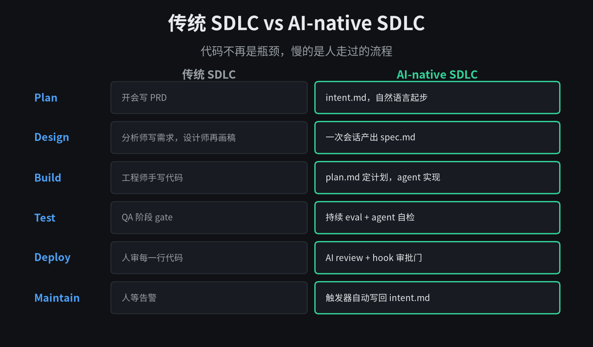
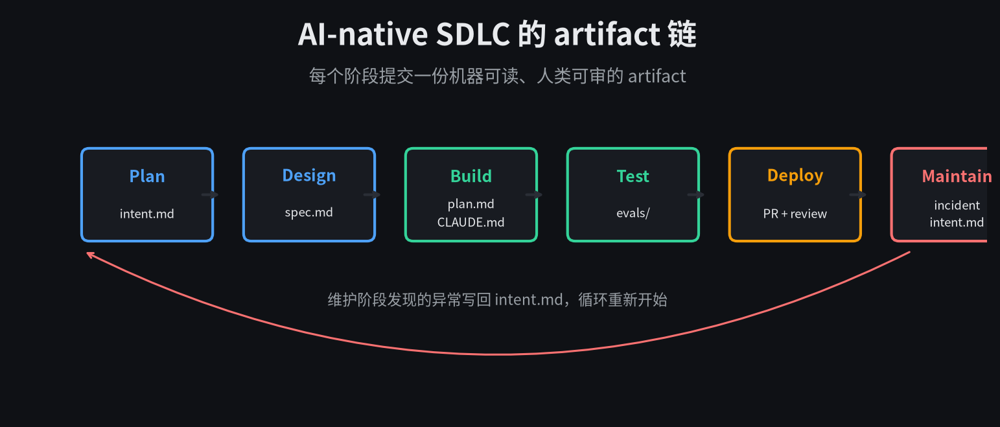
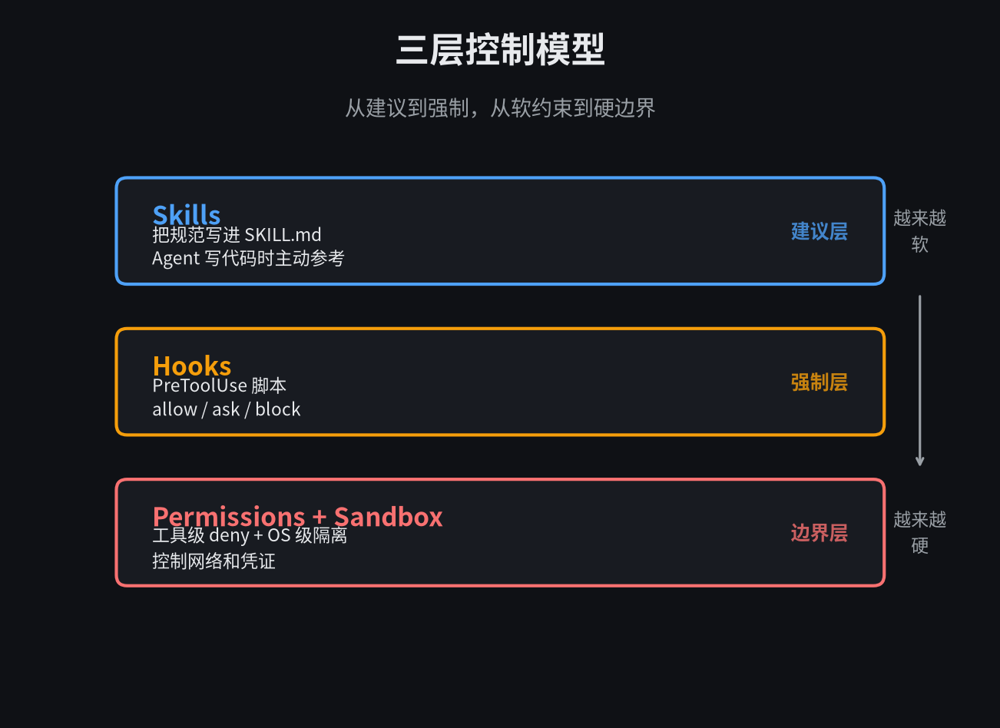
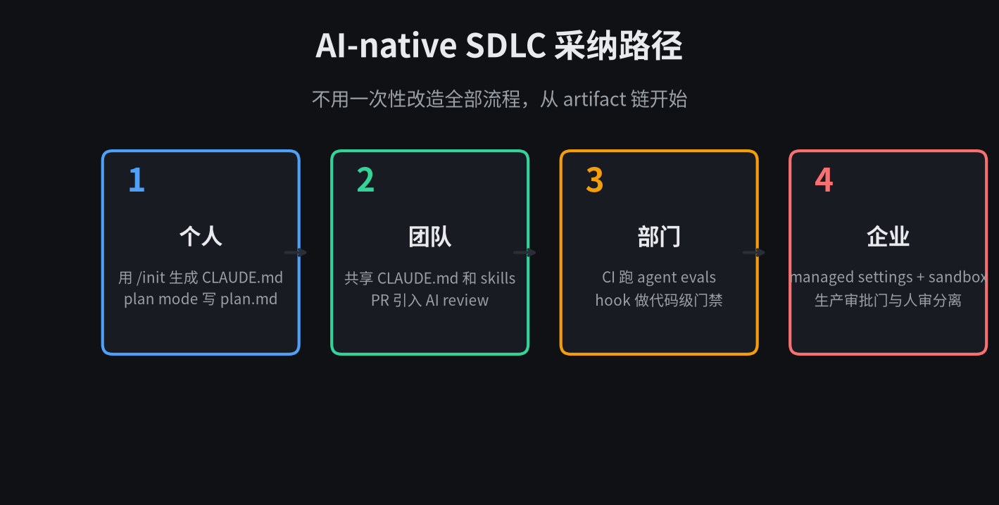

代码不再是瓶颈，慢的是人走过的流程。
前几天读完 Claude 刚发的 The AI-native SDLC Playbook，40 分钟的原稿被我翻了两遍。最打动我的不是某个具体工具，而是它的开篇判断。
Code is no longer the bottleneck.
代码不再是瓶颈。现在 Agent 写代码的速度，远超周围那些还得靠人一步步走的流程。规划、评审、测试、部署、审批，这些原本是为了控制人而设计的环节，反而成了最大的阻塞。
这篇 playbook 讲的就是怎么把整个软件开发生命周期重新设计一遍，让流程跟得上 Agent 的生产力。我把核心概念和实践方法整理了一下。
01
AI-native SDLC 到底是什么
它不是简单地在每个阶段加一层 AI 辅助。传统 SDLC 是线性的，需求、设计、开发、测试、发布、运维，每个阶段由不同角色负责，靠文档、工单、签名来交接。
AI-native SDLC 把它改成了一个循环。每个阶段结束都提交一份 artifact，下一段直接读取。人类的注意力从「启动每个阶段」转移到「在关键节点做判断」。
Playbook 里有一句话我记了下来。Human judgement stays above it. 人类的判断在循环之上，而不是被嵌进循环里疲于奔命。
它还有另一个名字，agentic SDLC，或者 agentic software development。标签不同，说的是同一件事。
02
六个阶段怎么变
Plan 阶段，不再靠 backlog refinement 和故事点。提出想法的人直接用自然语言跟 Claude 聊，聊清楚问题、期望结果、约束和开放问题，输出一份 intent.md。产品负责人审阅后通过。
Design 阶段，需求和设计被压缩成一次会话。Claude 拿着 intent.md，在品牌、安全、合规、UX 等 skill 约束下生成 spec.md。产品 owner 审 spec，但不写 spec。
Build 阶段，工程师从 plan mode 开始。先让 Claude 读代码库，读 intent 和 spec，生成一份 plan.md，列清楚改哪些文件、按什么顺序、怎么证明正确。人审完 plan，Claude 再去实现。
Test 阶段不是等 QA 来 gate。每个 Claude 会话都被给了一个反馈回路，跑测试、跑构建、截图对比，自己迭代到通过。配置变更还要经过持续 evals 回归测试。
Deploy 阶段，AI 参与 PR review，按 REVIEW.md 里定义的策略跑多轮检查。人类 reviewer 只做判断：意图对不对，风险能不能接受。
Maintain 阶段最不一样。触发器发现异常后自动调用 Claude，诊断、写 intent.md、走修复流程。告警不再只等人。
03
贯穿始终的 artifact 链
Playbook 里反复强调一个概念：committed artifact。每个阶段结束都要提交一份可被下一阶段读取的 artifact，并且写进版本控制。
Plan 提交 intent.md，Design 提交 spec.md，Build 提交 plan.md 和代码 diff，Deploy 留下 PR review 记录，Maintain 留下 incident 和修复记录。

一连串 commit 本身就是审计轨迹。
这条链有两个好处。第一，Agent 在每个阶段都知道上一阶段想要什么，不需要人反复解释。第二，审计天然存在，谁提的需求、Agent 做了什么、谁批准的，全在 git 历史里。
早期阶段 artifact 主要是 markdown，因为产品经理和 Agent 都能读能写。Build 之后 artifact 变成代码和记录。
04
三层控制模型
流程变快了，控制不能丢掉。Playbook 把控制分成了三层，从软到硬。
最软的是 Skills。把组织的规范、安全标准、API 设计约定写成 SKILL.md，放在 .claude/skills/ 里。Claude 在相关场景自动加载，写代码时就参考。Skill 是建议性的，让违规变少，但不强制。
中间是 Hooks。PreToolUse 脚本在 Claude 执行动作前运行，返回 allow、ask 或 block。比如禁止改测试文件、禁止读 secrets、生产部署必须有人授权。Hook 是确定性的。
最硬的是 Permissions + Sandbox。工具级 deny 控制 Claude 能读什么、能调什么命令。Sandbox 做 OS 级隔离，限制网络出口和凭证访问。Managed settings 则由平台团队统一下发，工程师本地无法覆盖。

Skill 减少错误，Hook 阻止错误，Sandbox 把错误关进笼子。
05
怎么开始用
Playbook 没有建议你一次性改造整个组织。它的路径是渐进的。
个人可以先从 CLAUDE.md 和 plan mode 开始。在项目根目录跑 /init，让 Claude 生成一个初始版本，然后删掉冗余，只保留新成员第一天需要知道的东西。构建命令、测试命令、约定、Claude 常犯的错误。
团队级开始共享 CLAUDE.md 和 skills。把反复出现的规范写成 skill，把 PR review 策略写成 REVIEW.md，让 Claude 参与 incoming PR 的初筛。
部门级把 evals 放进 CI。每次 CLAUDE.md 或 skill 变更都跑一组真实任务的回归测试，确保配置改动不会把 Agent 带偏。
企业级则要上 managed settings 和 sandbox。平台团队通过 MDM 或 admin console 统一下发权限、hook、插件市场白名单、MCP server 白名单，工程师无法本地绕过。

不用等组织改造完才动手，artifact 链是第一步。
一个具体例子。如果你今天只想试一件事，就在下次改需求时，别直接让 Claude 写代码。先让它读 intent，生成 plan.md，你自己审一遍计划再让它动手。单是这一步，就能少踩很多坑。
06
它真正改变的不是速度，是分工
读完整篇 playbook，我的感受是，它不是在教人怎么用 AI 写更多代码。
它是在重新定义谁对什么负责。Agent 负责执行和自检，人类负责判断和把关。流程从「人推着事走」变成「事在循环里跑，人只在关键节点点头或叫停」。
这个转变很难一蹴而就。因为它要求你把规范变成代码、把审批变成 hook、把知识变成可版本控制的文件。表面上是在改工具，实际上是在改组织习惯。
但反过来看，一旦这些基础设施到位，团队的杠杆会变得非常大。一个人能同时 orchestrate 多个 Agent session，一个监控异常能自动触发修复流程，一个规范变更能通过 skill 在几分钟内同步到所有人。
The loop keeps running. Human judgement stays above it.
循环持续运行，人类的判断始终在它之上。这可能是 AI-native SDLC 最简洁的总结。